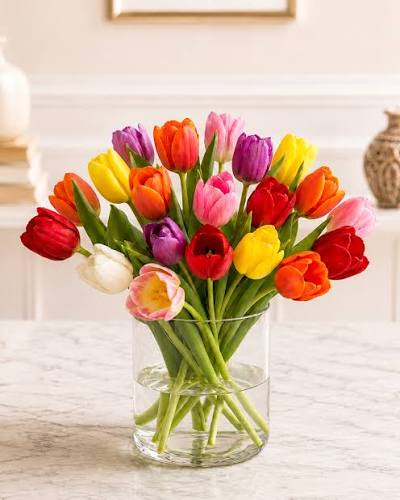

Seasonal Spring
Spring Tulip Basket
1400₺
Origin & History
Originally wild mountain flowers across the steppes of Central Asia, tulips were embraced and cultivated by the Ottoman Empire before creating widespread admiration across Europe during the Dutch Golden Age.
Harvesting & Handling
Harvested by pulling stems directly from the bulb while buds show initial color pigments but remain closed. Tulips continue to grow up to an inch inside cool freshwater vases, giving each arrangement a natural movement.